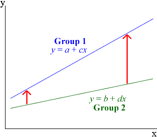
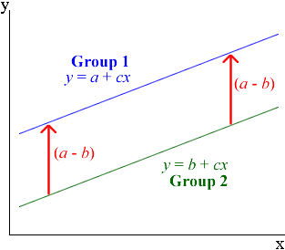
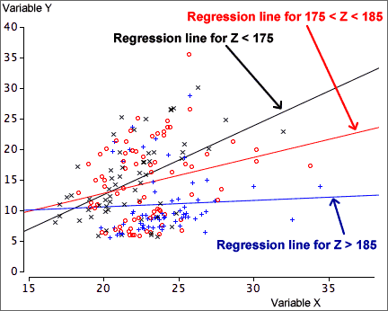
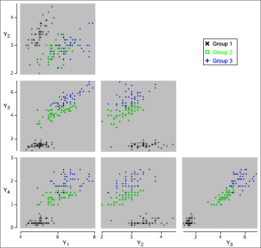
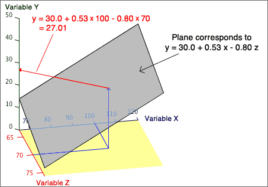
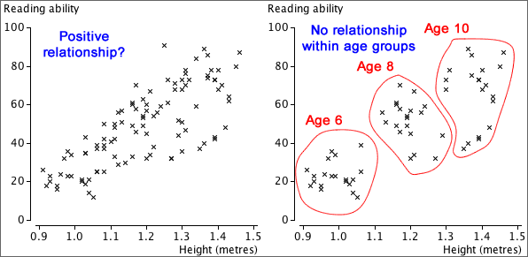
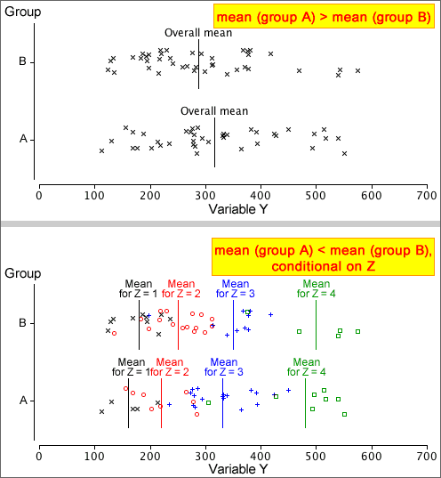

If you don't want to print now,
Different plotting symbols for a third variable
The simplest way to show the relationship between three numerical variables is based on a scatterplot of two of the variables, with the third variable being represented by differing symbols instead of identical 'crosses'. Possibilities are:
Although this kind of scatterplot is easy to draw, it is usually hard to interpret. The decision about which of the three variables to represent using the plotting symbol can make interpretation easier.
3-dimensional scatterplots
The most direct way to extend a standard scatterplot of two variables, X and Y, to include a third variable, Z, is to add a third dimension to become an axis for Z. Each individual would be represented by a cross in a 3-dimensional cube.

Although a computer screen is only 2-dimensional, it can display a projection of such a 3-dimensional scatterplot. Rotating such a display with the mouse gives a good feel for the shape of the underlying 3-dimensional scatter of points. This is a dynamic display that is only effective on a computer — the information in the display is conveyed by movement. On paper, we can only present information in two dimensions.
Three-dimensional scatterplots are an interesting (and occasionally useful) way to display data. They are however much overrated as an analysis technique and simpler displays are usually more effective for extracting information from multivariate data.
Scatterplots of all pairs of variables
The problem of displaying relationships becomes even more difficult when there are more than three variables. It is possible to gain some insight into their relationships with an array of scatterplots of all pairs of variables, called a scatterplot matrix.
Brushing
Although a static scatterplot matrix reveals some aspects of the relationships between the variables, more insight into the data is obtained by adding dynamic features.
On a computer display, the scatterplots can be dynamically linked, so that clicking on a cross on one scatterplot highlights that individual in all scatterplots. Brushing extends this to allow highlighting of multiple crosses on a scatterplot with a 'brush' tool.

More about brushing
Brushing can be used on any linked displays of the same data set.

Slicing a scatterplot using a third variable
Slicing is a dynamic technique that only displays a subset of the individuals, based on a restricted range of values for one particular variable. For example, we might display a scatterplot of Y against X, but only for individuals whose values of Z are between 20 and 30. The subset can be dynamically changed with a slider or other control to show whether the relationship between X and Y is different for individuals with low Z and high Z.
Trellis plot
Slicing is a dynamic method and must therefore be performed on a computer. Although less effective, an alternative is to show a series of static plots for different slices of the data. This is called a trellis plot.
Three or more variables
We previously described the relationship between two numerical variables, X and Y.
In many applications, more than two measurements are made from each individual and the additional variables may throw light on the relationship.
Use of this extra information may lead to more accurate predictions of Y.
Distinguishing groups in a scatterplot
We now consider how a categorical variable, Z, can help explain the relationship between two numerical variables, X and Y. It equivalently examines whether the relationship between X and Y is the same in each of several groups.
As in most other situations, data analysis should start by examining the data graphically. Differences between the groups can be shown with different symbols and/or colours for the crosses in a scatterplot of Y against X.

Least squares in each group
We can separately examine the relationship between X and Y in each group (or equivalently for each value of a categorical variable, Z). If the relationship between X and Y is different in the different groups, this should lead to more accurate predictions of Y from X.
A regression line can be separately fitted by least squares in each group.

Separate regression lines
The problem with fitting separate regression lines by least squares in the different groups is that it is difficult to concisely explain the difference between the groups — the difference between the predicted response in the groups depends on the value of the explanatory variable.

Parallel regression lines
Interpretation is considerably simplified if we constrain the regression lines for the different groups to have the same slope. In the diagram below, the difference between the groups is the same for all values of X.

Parallel lines are not appropriate descriptions of all data sets. Always check a scatterplot first.
Least squares
The principle behind fitting parallel lines to two or more groups is the same as in ordinary simple regression — we choose the parameters to minimise the sum of squared residuals (vertical distances between the data crosses and their corresponding line). The resulting formulae are complicated, but most statistical software will do the calculations for you.
Transformation of the response
It is much easier to interpret the parameters when parallel lines are fitted to different groups than when their slopes are different, but the data or the context may not justify such a simplification.

After a nonlinear transformation of the response, the relationships in the two groups may be closer to parallel. A transformation to reduce skewness in the reponse often works well.

Understanding the model for ln(y)
Logarithmic transformations are particularly useful because the parallel least squares lines have a simple interpretation. For the above data they are:
Female: ln (y) = 0.391 + 0.0747 x
Male: ln (y) = 1.192 + 0.0747 x
This means that:
ln(y) is (1.192 - 0.391) = 0.801 higher for females than for males with the same x.
We can now concisely summarise the difference between males and females:
y for females is e0.810 = 2.23 times that for males with the same x.
Definition of groups
A categorical variable naturally splits the individuals into groups, but a numerical variable, Z, can also be used to define groups.

Distinguishing groups in a scatterplot matrix
A scatterplot matrix can help to describe the relationships between 3 or more numerical variables. If each individual belongs to one of several known groups, different symbols or colours can be used to distinguish the groups.

Response and explanatory variables
We are often interested in how a 'response' variable, Y, depends on other explanatory variables. If there is a single explanatory variable, X, we can predict Y from X with a simple linear model of the form,
y = b0 + b1 x
However if other explanatory variables have been recorded from each individual, we should be able to use them to predict the response more accurately.
Adding extra variables
A simple linear model for a single explanatory variable,
y = b0 + b1 x
can be easily extended to describe the effect of a second explanatory variable, Z, with an extra linear term,
y = b0 + b1 x + b2 z
and so on with more explanatory variables,
y = b0 + b1 x + b2 z + b3 w + ...
This type of model is called a multiple regression model.
Coefficients
Despite our use of the same symbols (b0, b1, ...) for all three models above, their 'best' values are often different for the different models. An example will be given in the next page.
Marginal and conditional relationships
In a linear model that predicts a response from several explanatory variables, the least squares coefficient associated with any explanatory variable describes its effect on the response if all other variables are held constant. This is also called the variable's conditional effect on the response.
This may be very different from the size and even the sign of the coefficient when a linear model is fitted with only that single explanatory variable. This simple linear model describes the marginal relationship between the response and that variable.
Example
In a model for predicting the percentage body fat of men, the best model (as determined by least squares) in a simple model with weight, is
Predicted body fat = -10.00 + 0.162 Weight
However if we add Abdomen circumference to the model, the best values for the coefficients are
Predicted body fat = -41.35 - 0.136 Weight + 0.915 Abdomen
Graphical display of data and models
Before applying statistical methods to any data set, we should try to display the data graphically. For a situation with response Y and two explanatory variables, X and Z, a rotating 3-dimensional scatterplot can display the data.
This kind of 3-dimensional diagram can also effectively illustrate linear models and their parameters.
(Similar graphical displays are not possible when there are 3 or more explanatory variables, but the concepts are the same.)
Graphical display of the equation
The linear equation to predict a response from a single explanatory variable can be displayed as a straight line on a scatterplot of Y against X.
y = b0 + b1 x
The corresponding equation for predicting Y from X and Z is
y = b0 + b1 x + b2 z
This linear model can be displayed as a plane on a 3-dimensional scatterplot of Y against X and Z.

Fitted values
A linear model provides a prediction of y for any values of x and z. For the i'th individual, the prediction is called its fitted value,
| fitted value, | = b0 + b1 xi + b2 zi |
Residuals
The difference between the fitted value and the actual response is called the individual's residual.
| residual, ei = yi − |
Residuals correspond to vertical distances between crosses in a 3-dimensional scatterplot and the plane representing the model.

Goal of small residuals
When fitting a model to data, the fitted values are unlikely to match exactly the observed response values and the prediction 'errors' are the residuals,
| ei = yi − |
'Small' residuals are desirable.
Least squares
The size of the residuals is described by their sum of squares,
| SSResidual |
The least squares estimates of b0, b1 and b2 are the values that minimise this.

The solution can be obtained algebraically but the formulae are relatively complex and a computer should be used to evaluate the least squares estimates.
Relationship between two numerical variables
Scatterplots, correlation coefficients and least squares lines honestly summarise the relationship between two numerical variables, Y and X.
However they can sometimes give a misleading impression about the relationship. The problem arises when other variables are also associated with both Y and X.
The marginal and conditional relationships between Y and X are often different and may even be in a different direction.

Lurking (or hidden) variables
If the marginal relationship between X and Y is different from their conditional relationship given Z, but Z has either not been recorded or is ignored when analysing the data, then Z is called a lurking variable (or a hidden variable).
Always think about whether there might be a lurking variable, Z, that is distorting the relationship that is observed between Y and X.
Relationship between a numerical and a categorical variable
The previous page showed that the marginal relationship between two numerical variables, X and Y, can be very different from their conditional relationship for specific values of Z. The same can happen when X is a categorical variable, perhaps defining different groups.

Lurking variables and relationships between categorical variables
When the direction of the relationship reverses, the effect is called Simpson's paradox. As with other 'paradoxes', there is no real contradiction; it just takes a bit more thought to understand why your initial intuition is wrong.
Smoking and survival
In a health survey, 1,314 women were classified as smokers or non-smokers, and their survival after 20 years was recorded.
| Survival | ||||
|---|---|---|---|---|
| Smoker? | Dead | Alive | Total | P(Dead) |
| Smoker | 139 | 443 | 582 | 0.239 |
| Non-smoker | 230 | 502 | 732 | 0.314 |
A naive examination of the data suggests that smoking decreases the probability of dying, but the opposite is true if the women are split into age groups.
| Age 18-44 | |||||
| Survival | |||||
|---|---|---|---|---|---|
| Smoker? | Dead | Alive | Total | P(Dead) | |
| Smoker | 19 | 269 | 288 | 0.066 | |
| Non-smoker | 13 | 327 | 340 | 0.038 | |
| Age 45-64 | |||||
| Survival | |||||
| Smoker? | Dead | Alive | Total | P(Dead) | |
| Smoker | 78 | 167 | 245 | 0.318 | |
| Non-smoker | 52 | 147 | 199 | 0.261 | |
| Age 65+ | |||||
| Survival | |||||
| Smoker? | Dead | Alive | Total | P(Dead) | |
| Smoker | 42 | 7 | 49 | 0.857 | |
| Non-smoker | 165 | 28 | 193 | 0.855 | |
Proportional Venn diagram
Simpson's paradox is explained in the proportional Venn diagram below — in it, each rectangle is proportional to the number of women with these values for the variables.

Most of the women aged 65+ were non-smokers. This increased the overall death rate of the non-smokers.
Analysis using 'lurking' variables
Variables are only called 'lurking' variables if they are either unrecorded or are unused when analysing the data. In this section's examples, we presented two analyses of the data sets:
Although the simple analysis can result in wrong conclusions, a full analysis using the 'lurking' variable is always more complex.
Do not ignore lurking variables to simplify the analysis — you could reach the wrong conclusions from the data.